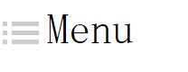
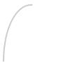

Without using CSS, how can we draw an icon on the web page? Picture. And we should use many kinds of pictures to match the different browsers, even we'll be in a fret when we cannot find a good way to manage those pictures and layouts. However, now we can use CSS to help us draw many icons used in common projects. From my experience and what I have searched(one-div.com), I conclude some skills to draw the icons, let's do it!

First, we should use "border" to creat the first and the thrid rectangles, then use "padding" and "background-clip" to create the second picture. Yes, those three lines next to rectangles can be drawed by "::before" or "::after". Let's see the CSS codes:
#point{
display: inline-block;
width:5px;
height:5px;
background: #ccc;
background-clip: content-box;
padding: 5px 0px;
border-top: 5px solid #ccc;
border-bottom: 5px solid #ccc;
}
#point::before{
display: inline-block;
content: "";
width:30px;
height:5px;
margin-left: 10px;
margin-top: -15px;
background: #ccc;
background-clip: content-box;
padding: 5px 0px;
border-top: 5px solid #ccc;
border-bottom: 5px solid #ccc;
}
<div id="point"></div><span style="font-size:3em;margin-left:20px;"> Menu</span>
Maybe you might see others use 4 "div"s to create this icon, but I just use two, a "div" and its "::before". Do you think it's more easier? ^.^
2. Draw circles
Can we use border to create a circle? Yes! Why not?! Let's see the following picture:
If you notice some details of CSS, you will know it's easy, just use the "border-radius" and let it equal to width and height of "div". You can try it by yourself.
#circle{
display: inline-block;
width:20px;
height:20px;
border:2px solid #ccc;
border-radius: 20px;
color:#ccc;
text-align: center;
font-weight: bold;
}
<div id="circle">!</div> <span>Look out!</span>
3. Draw slant
How to draw a slant? Yes, you have to use "rotate()". Let's see an example:
Let's see it's CSS codes:
#diamond{
display: inline-block;
border-top:2px solid #ccc;
width:20px;
-webkit-transform:rotate(30deg);
-ms-transform:rotate(30deg);
transform:rotate(30deg);
}
<div id="diamond"></div><span style="margin-left:5px;">It's a slant</span>
4. Draw arc
Just think about it. Is it difficult? No, using "border-radius" is enough. Let's see those important attributes: border-top-left-radius border-top-right-radius border-bottom-right-radius border-bottom-left-radius For example, if we want to draw an arc like following:

Let's see CSS codes, you might say "Wo~ so easy!". ->.-> If you want to draw other styles of arc, you can also use those attributes.
#arc{
width:40px;
height:80px;
border-top: 2px solid #ccc;
border-left: 2px solid #ccc;
border-top-left-radius: 40px 80px;
}
<div id="arc"></div>
5. Using "box-shadow"
In the CSS, we have an almost perfect attribute —— "box-shadow". Tell the truth, we can use it to create or draw all the icons. But we prefer to draw icons by above attributes, because "box-shadow" will write more codes. Let's see an example —— draw an arrow:
The CSS codes:
#arrow{
height:2px;
width:2px;
box-shadow: 1px 1px #ccc,2px 2px #ccc,3px 3px #ccc,4px 4px #ccc,5px 5px #ccc,6px 6px #ccc,7px 7px #ccc,8px 8px #ccc,9px 9px #ccc,10px 10px #ccc,11px 11px #ccc,12px 12px #ccc,13px 13px #ccc,14px 14px #ccc,15px 15px #ccc,16px 16px #ccc,17px 15px #ccc,18px 14px #ccc,19px 13px #ccc,20px 12px #ccc,21px 11px #ccc,22px 10px #ccc,23px 9px #ccc,24px 8px #ccc,25px 7px #ccc,26px 6px #ccc,27px 5px #ccc,28px 4px #ccc,29px 3px #ccc,30px 2px #ccc,31px 1px #ccc;
}
<div id="arrow"></div>
If you really understand the principle of "box-shadow", you will know above codes very clearly because it's not so difficult but a little bit troublesome. However, we can use it to draw any icons, if you have interests, just try it!
(That's all)